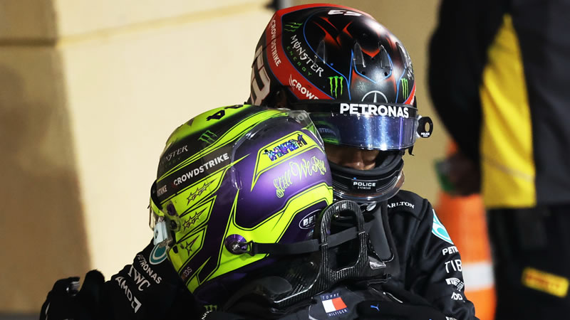

TEMPORADA 2022
Max Verstappen: Ultimo ganador
El piloto neerlandés Max Verstappen logró la victoria en el Gran Premio de Francia y extiende de forma importante su ventaja en el campeonato. Mala fortuna para Charles Leclerc, quien se salió de pista cuando iba liderando en la primera parte de la competencia. El podio lo completaron los pilotos de Mercedes, Lewis Hamilton y George Russell. Cuarto lugar para Sergio 'Checo' Pérez.
Con los resultados finales de este GP de Francia, Max Verstappen se mantiene el liderato con 233 puntos. Segundo Charles Leclerc (170), tercero Sergio Pérez (163), cuarto Carlos Sainz (144), quinto George Russell (143), sexto Lewis Hamilton (127), séptimo Lando Norris (70), octavo Esteban Ocon (56), noveno Valtteri Bottas (46) y completando el top 10, Fernando Alonso (37).
En el campeonato de constructores, Red Bull es líder con 396 puntos, segundo Ferrari (314), tercero Mercedes (270), cuarto Alpine (93), quinto McLaren (89), sexto Alfa Romeo (51), séptimo Haas (34), octavo AlphaTauri (27), noveno Aston Martin (19) y último Williams (3).
Mercedes muestra su evolución con el podio de Hamilton y Russell en Paul Ricard

La escudería Mercedes no ha tenido un 2022 dominante tal como han sido sus ocho temporadas anteriores. Están dejando atrás progresivamente sus dificultades y el W13 es más veloz. El doble podio en el Gran Premio de Francia lo demuestra.
Lewis Hamilton no estuvo presente en la primera sesión de pruebas libres en Paul Ricard, luego que le cediera su auto a Nyck de Vries. Posteriormente en clasificación obtuvo el cuarto tiempo y en la carrera terminó segundo. Un dato a tener en cuenta: no tuvo hidratación en su auto durante las 53 vueltas.
Visiblemente emocionado tras la carrera, el siete veces campeón de la F1, expresó: "Es un gran resultado, teniendo en cuenta que hemos estado muy lejos todo el fin de semana y que me perdí la primera sesión del viernes. No esperaba luchar por el segundo puesto o el podio, así que es un resultado maravilloso para nosotros.
Nuestro equipo ha estado increíble en cuanto a fiabilidad y esto demuestra que con dedicación y concentración, podemos ir subiendo poco a poco. Todavía no tenemos el mismo ritmo que los dos equipos de delante, pero hemos sido capaces de mantener a raya a uno de ellos, así que es un gran resultado para nosotros, todo el mundo ha trabajado muy duro.
Felicito enormemente a los equipos de las fábricas y al equipo de aquí. Sin ellos, esto no habría sido posible y estoy orgulloso de ellos. Y George también ha hecho un trabajo increíble", comentó Hamilton.
Entretanto George Russell se clasificó sexto y luego en carrera terminó tercero tras superar a Sergio Pérez en el instante final aprovechando el período de finalización del Virtual Safety Car.
El joven piloto declaró: "Ha sido una carrera larga y dura. Nuestro ritmo era fuerte, pero hemos tenido problemas con el calentamiento de los neumáticos en la reanudación y Checo ha estado muy fuerte. Me ha alegrado ver la bandera a cuadros y terminar tercero. Estamos progresando mucho y tenemos que mejorar nuestro rendimiento en la clasificación, porque nos falta consistencia.
Sabemos que, como equipo, tenemos problemas con el calentamiento de los neumáticos y en la reanudación he tenido el mismo problema. Nuestro ritmo de carrera ha sido razonable y nos estamos acercando a la parte delantera.
Estamos haciendo todo lo posible para mejorar el rendimiento del auto y creemos que estamos en el camino correcto, así que estamos entusiasmados con lo que nos pueden deparar las próximas carreras. Estamos progresando y todavía hay más por venir, gracias a todos en las fábricas de Brackley y Brixworth por su duro trabajo y dedicación", dijo Russell.
Finalmente Toto Wolff, jefe del equipo, señaló: "En general, los pilotos han hecho un buen trabajo y el esfuerzo del equipo ha sido estupendo. Estamos sacando el máximo posible el día de la carrera. George ha sido inteligente y rápido, mientras que Lewis ha luchado como un león. Lewis está absolutamente en ello y sigue empujando al equipo. Mantiene su mentalidad positiva, incluso en días sombríos como el de ayer, y nunca deja de empujar.
Pero tenemos que seguir siendo humildes, porque nuestro auto no es lo suficientemente bueno para luchar con los equipos de delante. Nos faltan entre seis y siete décimas con respecto a los líderes. En la clasificación nos cuesta llevar los neumáticos a la ventana óptima y no conseguimos sacar el máximo partido a la primera vuelta rápida. Y luego, en la carrera, perdemos tres segundos al principio, pero una vez que nos estabilizamos, no estamos tan mal.
Nos queda mucho trabajo por hacer, pero creo que tenemos a los mejores para hacerlo. En general, ha sido un gran esfuerzo de equipo en la pista y en las fábricas, y vamos en la dirección correcta", indicó el directivo austriaco.
Mercedes igualó en Francia su mejor resultado en puntos de la temporada con 33, el cual consiguió en el pasado GP de Austria sumando los puntos de la Sprint y la carrera.